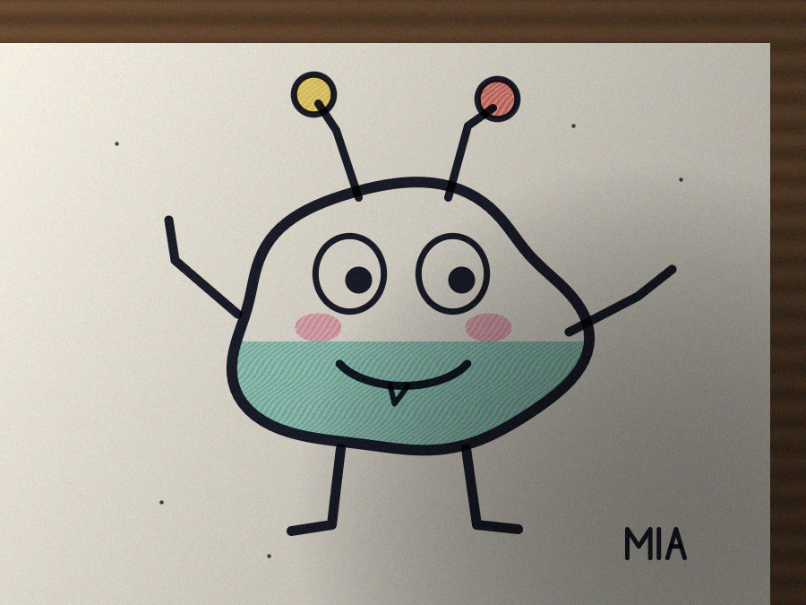

doodle-
cutout
A phone photo of a drawing on paper, cut out into a clean sticker.

zero dependencies
TypeScript
runs in the browser
42 tests
MIT
example: a synthetic test photo
github.com/Harindulk/doodle-cutout